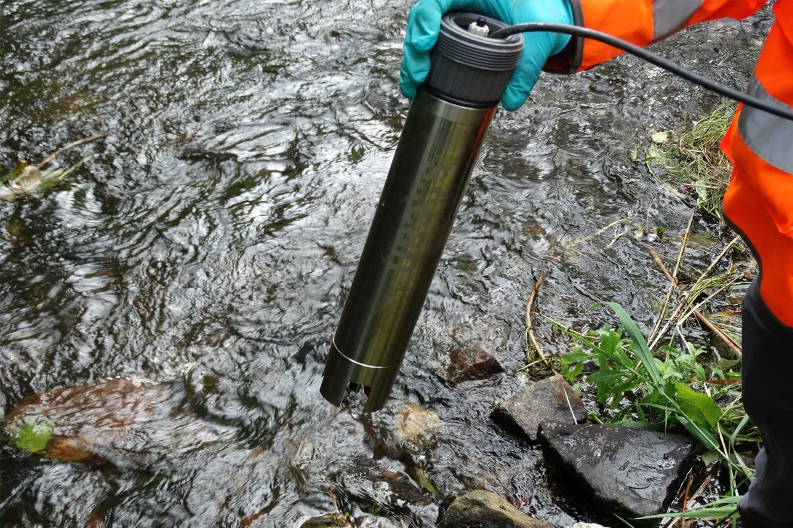

Chuẩn Thông tư 10/2021/TT-BTNMT

Giải pháp trọng tâm
Quan Trắc Nước Thải Tự Động & Liên Tục
Hệ thống trạm quan trắc tự động liên tục giám sát chất lượng nước xả thải đầu ra tại các khu công nghiệp, nhà máy sản xuất hóa chất, dệt nhuộm và trạm xử lý nước thải tập trung. Đo quang phổ in-situ không dùng hóa chất thuốc thử, tự động truyền dữ liệu liên tục về Sở Tài nguyên & Môi trường 24/7.
Thông số đo giám sát:
COD (Nhu cầu oxy hóa học)
BOD5
TSS (Chất rắn lơ lửng)
Amoni (NH4-N)
Nitrat (NO3-N)
pH & Nhiệt độ
Lưu lượng kênh hở
- Không dùng hóa chất: Đầu dò spectro::lyser V3 đo quang phổ trực tiếp, không sinh chất thải thứ cấp.
- Tự làm sạch bằng khí nén: Ngăn chặn màng sinh học và cặn bùn bám cửa sổ quang học.
- Bộ điều khiển con::cube V3: Tích hợp Datalogger công nghiệp, màn hình cảm ứng, truyền Modbus/4G.